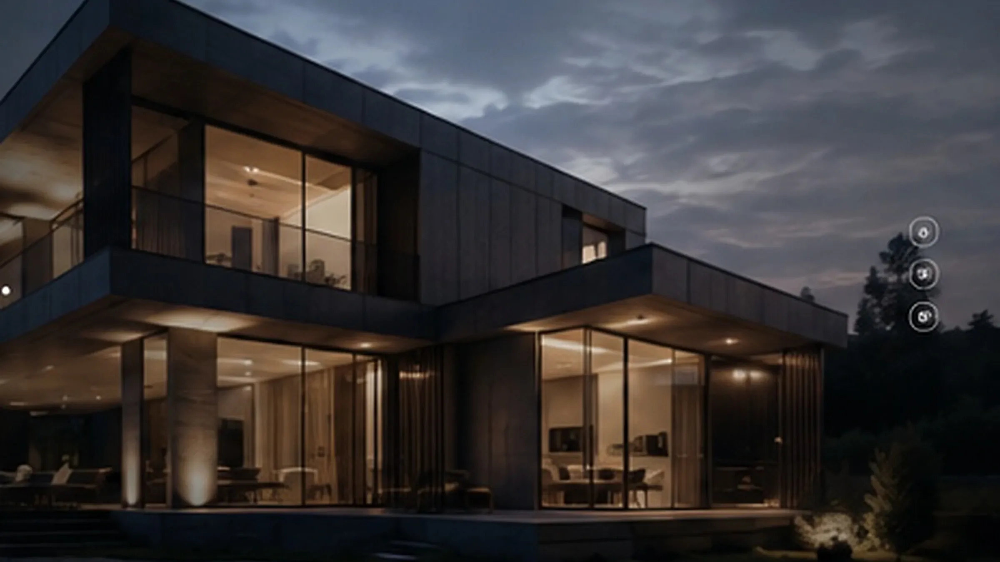
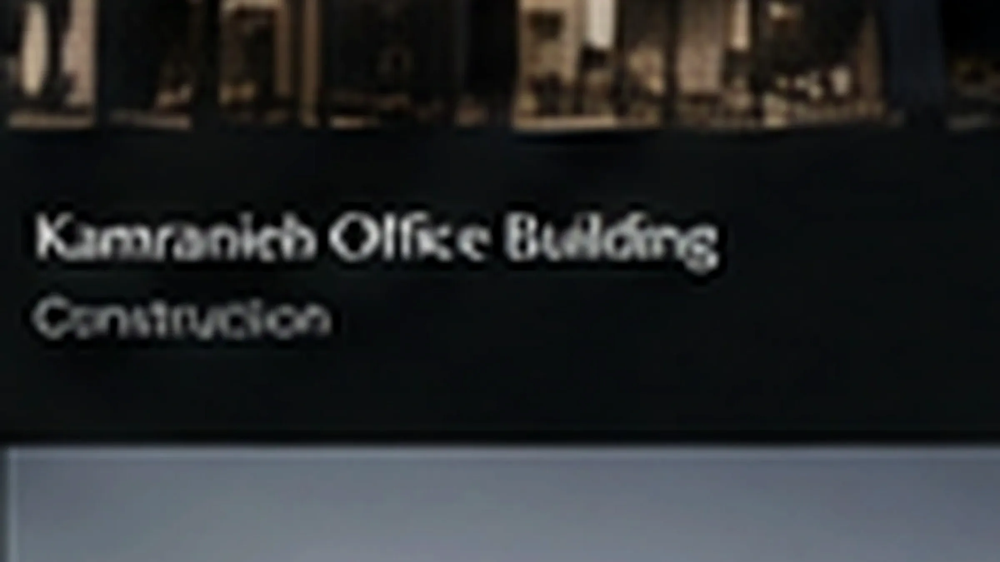
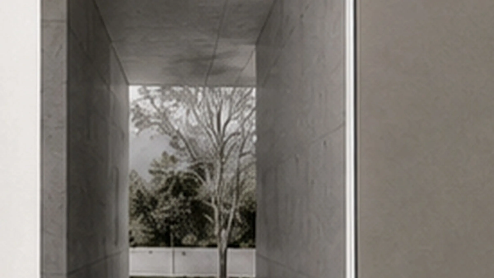
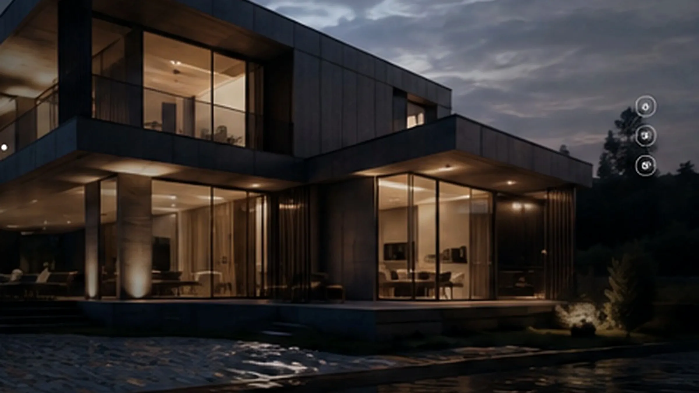
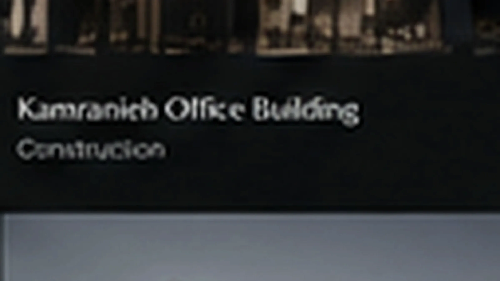

ARNO ENGINEERS GROUP
ARNO Insights
Original articles on architecture, execution, quality, development, renovation, project management and engineering services.

Original articles on architecture, execution, quality, development, renovation, project management and engineering services.

A beautiful detail that cannot be procured, coordinated or installed reliably is not a resolved detail. Buildability brings the realities of sequencing, access, tolerances, interfa…

The first architectural move should follow a development question: what can this site realistically support? Geometry, access, neighboring conditions, planning constraints, parking…

Partnership conversations often start with percentages. A more disciplined process starts with facts: title and ownership status, site capacity, delivery expectations, financing ab…

A management-contract model only becomes transparent when procurement, approvals, invoices, subcontractor scope, schedule and changes are traceable. The fee percentage is one line …

The most expensive defects are often the ones discovered after work is hidden. A practical QC system defines hold points before concrete, waterproofing closure, ceilings, screeds, …

Incoming material control should connect delivery documents, bar markings, diameters, storage conditions and project specifications. Where testing is required, sample identity must…

A pre-pour review should happen early enough to correct issues without delaying the truck. Reinforcement, cover, embeds, sleeves, formwork stability, access, vibration plan, curing…

Repetitive structural work can multiply a small coordination mistake across an entire floor. Before closing a roof system, review geometry, supports, openings, service penetrations…
Ceilings, kitchens, bathrooms and façades are dense interface zones. Late decisions create cutting, patching, visible compromises and schedule disruption. Coordination should freez…
Demolition feels like progress, but it can lock a project into uncertainty. Before starting, document existing conditions, define retained elements, survey MEP routes, establish a …
A façade is simultaneously an image, an environmental separator and a maintained construction system. Design reviews should consider water paths, thermal movement, drainage, anchor…

An efficient plan reduces unnecessary circulation, but efficiency also includes daylight, furniture logic, privacy, service access, adaptability and market expectations. A smaller …

A building management system creates value when it links sensors, equipment, alarms, schedules and operating decisions. More data is not automatically more intelligence.…
Survey information anchors design and execution to reality. Site boundaries, levels, grid transfer, façade control, as-built records and settlement monitoring all rely on traceable…

Permit pathways vary by city, project type and current regulations. The project team can still reduce friction by organizing ownership documents, survey information, design respons…
A master schedule shows destination; a lookahead makes work executable. Teams identify prerequisites, constraints, information needs, materials and trade interfaces before the task…
Handover is a process, not an event. Asset registers, test records, commissioning results, as-built drawings, warranties, training and punch lists should be accumulated progressive…

Award-ready work usually has a clear idea, a relevant response to context, technical coherence and excellent documentation. Chasing a visual trick is weaker than building a project…

A useful supervision report identifies the issue, location, reference requirement, risk, responsible party, deadline and closure evidence. Without closure tracking, the same observ…

Management contracting, general contracting, design-build and partnership structures distribute risk, information and decision rights differently. No model is universally best.…
For architecture, construction, management contracting, development partnership or renovation, send ARNO your initial project brief.